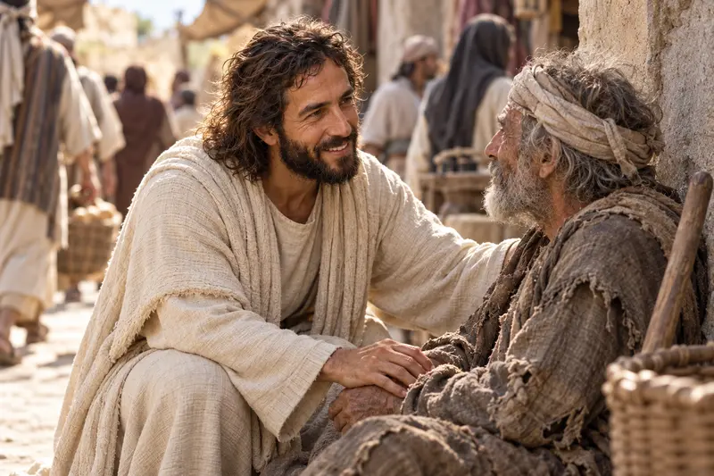
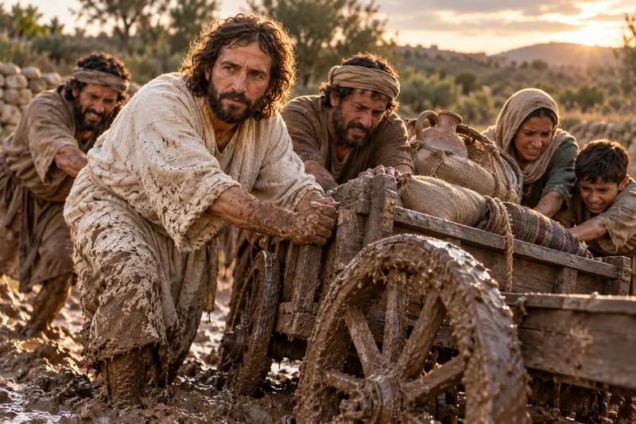
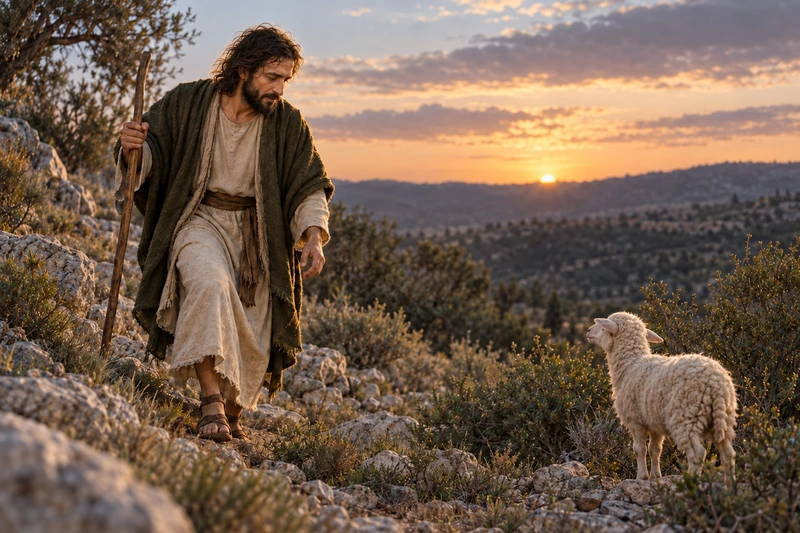

Notice the Savior's expression and the people nearest Him in the crowded street.
Amid the crowded street, the Savior’s gentle expression invites us to remember His care for the one.
A path through this study
Listen for the Shepherd's Voice
Notice the Savior’s face among the people. John 10 tells of the Shepherd who knows His sheep and gives His life for them.

Listen for every action Jesus uses to describe the Good Shepherd in John 10.
Consider one person you can notice, call, or walk beside with greater care.
Scripture study
Known, Led, and Loved
In John 10:1-18, Jesus describes the Shepherd who knows His sheep, calls them, and gives His life for them. They recognize His voice and follow.
Psalm 23 speaks of rest, guidance, and the Shepherd’s presence—even through the valley of the shadow of death.
The sheep beyond the present fold
Jesus speaks of “other sheep” in John 10:16. In 3 Nephi 15:11-24, He tells the people at Bountiful that they are those sheep.
Look again
The Shepherd Draws Near
Pause with each scene, then follow its scripture into the Savior’s care.
{kind=link}

{kind=link}
Quiet reflection
Hear and Follow
Choose the prompt that feels most honest today.
Where have I noticed the Shepherd's care?
Read Psalm 23 slowly. Where have you felt His care? Give thanks for one person or moment that brought comfort.
Which voice am I learning to trust?
John 10 describes sheep recognizing His voice. Which thoughts help you follow Him with love?
{kind=link}

Who might need someone to walk beside them?
Think of someone who feels unseen. Offer a listening ear, a meal, or help with a daily task.
Watch, read, and reflect
A companion for your study
These official Church resources offer another way to explore this subject. Read or watch at your own pace, then return to the passages above.
Church video
The Savior’s Abiding Compassion
Consider the Shepherd’s compassion and how disciples can see and care for people as He does.
The Church of Jesus Christ of Latter-day Saints
Church video
The Good Shepherd and Other Sheep I Have
Read John 10:1-18 alongside this portrayal of Jesus teaching about the Good Shepherd. Notice how knowing His sheep and giving His life explain His care.
The Church of Jesus Christ of Latter-day Saints
Keep walking
Where Would You Like to Go Next?
Faith Through the Valley
Continue from Psalm 23 into a grounded study of faith during hard seasons.
The Joy of Returning
Follow the Shepherd's restoring care into repentance, grace, and forgiveness.
Welcome the One Before You
See how the Savior receives children when others would send them away.